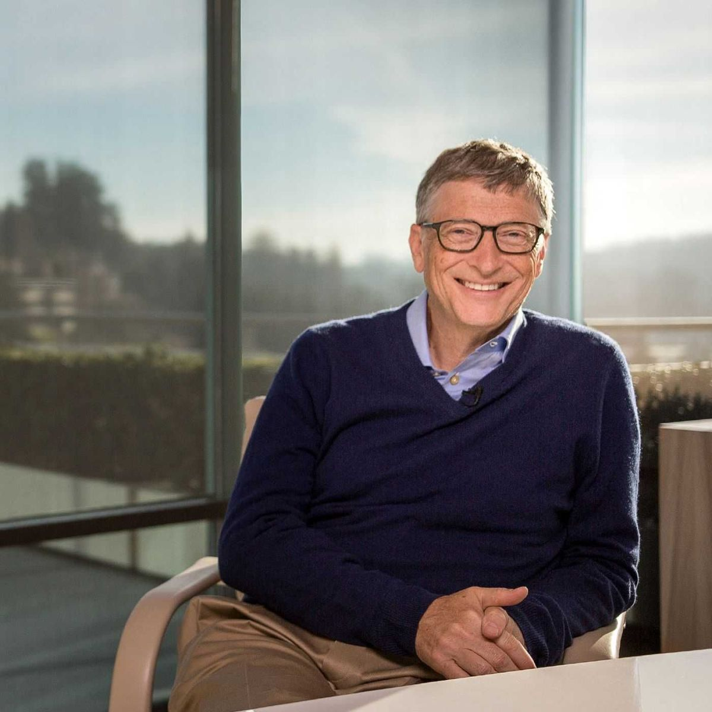

Portrait of Bill Gates, taken in 2018
"I choose a lazy person to do a hard job. Because a lazy person will find an easy way to do it." -Bill Gates
Timeline
| 1955 | William Henry Gates III is born in Seattle, Washington |
|---|---|
| 1968 | Started programming with good friend Paul Allen |
| 1973 | Enrolled at Harvard University |
| 1975 | Founded Microsoft with Paul Allen |
| 1985 | Windows is launched |
| 2000 | Founds the Bill and Melinda Foundation with Melinda French |
| 2001 | Microsoft releases the original Xbox |
| 2006 | Gates launches TerraPower, with the idea of producing energy for an affordable price |
| 2008 | Gates leaves his daily job at Microsoft |
| 2014 | Gates steps down as CEO of Microsoft, but remains on the board of directors |
In a Nutshell...

| Born | 28th October 1955 (aged 66) |
|---|---|
| Education | Harvard University (dropped out) |
| Occupation |
|
| Known for | Co-founding Microsoft |
| Awards | Presidential Medal of Freedom (2016) |
| Parents | Bill Gates Sr. (father), Mary Maxwell (mother) |
| Spouses | Melinda French (1994-2021) |
| Children |
|